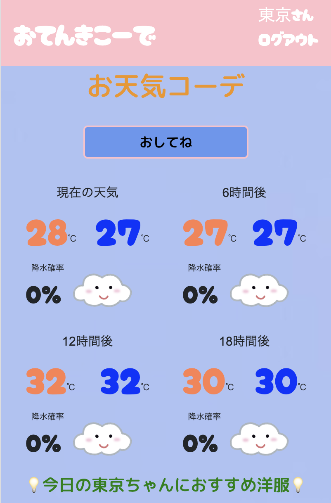
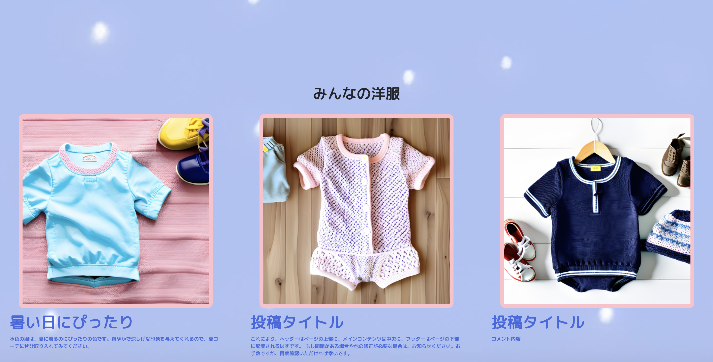

お天気コーデ

開発環境
Ruby / Ruby on Rails / MySQL / GitHub / Render / Visual Studio Code / PostgreSQL
-
概要
制作時間 40時間 URL https://first-myapp.onrender.com ID adminmin PASS 292929 -
動作テスト
テスト用アカウント
mail tokyo@mail PASS 1000000
OUTLINEアプリケーションの概要
オリジナルアプリケーションとして、赤ちゃんの洋服を提案してくれるを開発しました。
主な機能は、ユーザー登録機能、天気情報の取得機能、気温から服を提案してくれる機能です。
トップページにアクセスすると、ログインを促されます。ユーザー情報を登録してもらう事で地域の情報を取得して天気情報を取得できるようになっています。
トップ画面のボタンを押す事で現在の時間から６時間毎の天気情報を表示してその情報から今日着る服を提案をしてくれます。
また、スマホからの閲覧も考えているのでレスポンシブ対応もしております。
-
開発に至った経緯
まずは身近な人の課題解決に向けて家族に相談することから始めました。
課題として取り上げたのが、赤ちゃんの服を決める時に天気や天候を気にして考えなくてはいけないことが大変であるということをオリジナルアプリで解決しようと決めました。
まず、天気情報をどのように取得するかを考え、海外のサイトで無料で取得できるAPIを使用した例を調べて、そこからJavascriptで非同期通信を使用したアプリにしようと開発を始めました。
-
開発で工夫したこと
一つ目は閲覧するとしたらスマホで見ることが多いと考えてレスポンシブ対応を行いました。
二つ目は子供の性別によって提案されるイメージ画像の表示を変更するようにいたしました。
三つ目は妻にもヒアリングを行い、使用者が子供のいる家庭向けとして可愛らしい雰囲気を表現するように意識してみました。
-
今後実装したいと思っていること
まずは、ユーザー同士でおすすめの服を投稿して共有できる機能を実装したいと考えました。
このアプリをユーザーが使用する上で何があと必要か考えた時、自身のコーデを投稿して共有できる機能があれば誰かに共感などをもらえた際に洋服を考えたりするのが楽しくなるのではないかと考えました。
また、他の方がコーデを参照できることでどのような服を着せればいいのか参考になると考えたためです。